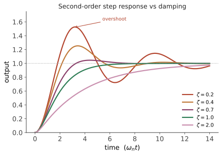

经典 III · 时域响应与性能指标
层次：本科核心。 客户不会说"我要相位裕度 60 度"，他们会说"要快、别超调、别抖"。时域指标是控制性能最直观的语言，也是与非专业人士沟通的接口。本页讲清阶跃响应的形状如何由极点决定，以及那些指标之间的相互冲突。
一、一阶系统：只有一个时间常数
- \(\tau\) 后达到 63%，\(3\tau\) 达 95%，\(4\tau\) 达 98%；
- 无超调、无振荡——一阶系统永远不会过冲；
- 极点在 \(s = -1/\tau\)：极点越靠左（负得越多），响应越快。
"极点位置 = 响应速度"这个对应，是经典控制全部直觉的基础。
二、二阶系统：阻尼比决定一切
极点为 \(s = -\zeta\omega_n \pm j\omega_n\sqrt{1-\zeta^2}\)。行为完全由 \(\zeta\) 分类：
| \(\zeta\) | 极点 | 响应 |
|---|---|---|
| \(\zeta = 0\) | 纯虚轴 | 等幅振荡（临界，不可接受） |
| \(0<\zeta<1\) | 共轭复数 | 欠阻尼：振荡衰减、有超调 |
| \(\zeta = 1\) | 二重实根 | 临界阻尼：无超调下最快 |
| \(\zeta > 1\) | 两个实根 | 过阻尼：慢而无超调 |

关键公式（工程上极常用）：
两个可直接使用的经验值：\(\zeta = 0.707\) → 超调约 4.3%；\(\zeta = 0.5\) → 超调约 16%。
读法：
- \(\zeta\) 控制超调（形状），\(\omega_n\) 控制速度（时间尺度）；
- 极点的实部决定衰减速度，虚部决定振荡频率；
- 想更快就把极点往左推，想更稳就让它们更靠近实轴。 第四页的根轨迹就是在做这件事。
三、主导极点近似
高阶系统看似复杂，但离虚轴最近的那对极点主导响应（其余极点衰减快得多）。
工程做法：若某对极点比其余极点靠右 5 倍以上距离，就可以用它们做二阶近似，直接套用上面的公式。这使得二阶系统的直觉可以覆盖大部分实际系统——这是经典控制得以实用的关键简化。
注意零点的干扰：靠近主导极点的零点会显著改变超调（右半平面零点还会造成反向初始响应，第二页）。主导极点近似在有零点时要小心使用。
四、稳态误差与系统型别
用终值定理算稳态误差。定义系统型别为开环传递函数在原点的极点数（即积分器个数）：
| 型别 \(N\) | 阶跃输入 | 斜坡输入 | 加速度输入 |
|---|---|---|---|
| 0 | \(\dfrac{1}{1+K_p}\) | ∞ | ∞ |
| 1 | 0 | \(\dfrac{1}{K_v}\) | ∞ |
| 2 | 0 | 0 | \(\dfrac{1}{K_a}\) |
规律清晰：每增加一个积分器，就能无静差地跟踪高一阶的输入。这正是第一页内模原理的具体表现。
工程含义：
- 定位系统要无静差跟踪阶跃 → 至少 1 型（这就是位置环里必须有积分的原因）；
- 要无静差跟踪匀速运动（如跟踪转台、数控进给）→ 需要 2 型，或用前馈补偿（第一页：前馈不引入稳定性问题，工程上常优先选它）。
五、指标之间的冲突
这是本页最该带走的东西。常用指标：
- 上升时间 \(t_r\)、峰值时间 \(t_p\)、超调 \(M_p\)、调节时间 \(t_s\)、稳态误差 \(e_{ss}\)。
它们不能同时最优：
| 想要 | 做法 | 副作用 |
|---|---|---|
| 更快（\(t_r\downarrow\)） | 提高增益 / \(\omega_n\) | 超调增大、裕度下降、放大噪声 |
| 更小超调 | 增大 \(\zeta\) | 变慢 |
| 零静差 | 加积分 | 相位滞后、可能饱和振荡 |
| 抗噪声 | 加滤波 | 相位滞后、变慢 |
注意最后两行：几乎所有"改善某项"的手段都会引入相位滞后，而相位滞后正是不稳定的根源（第一页）。这就是控制设计的中心难题——第五页的频域方法之所以强大，正因为它把这些冲突统一到了同一张图上。
六、执行器的现实约束
教科书公式假设执行器能输出任意大的控制量。现实中不能：
- 饱和：电机有最大电流/电压，阀门开度在 0–100% 之间；
- 速率限制：阀门开合需要时间，电机加速度有限；
- 分辨率：数字执行器有量化台阶。
后果：
- 设计上的"快"可能因饱和而无法实现——实际响应由执行器能力而非控制律决定；
- 饱和期间反馈回路实际上断开了（输出不再随误差变化），若此时积分器继续累加 → 积分饱和（windup），导致巨大超调（第六页给解法）；
- 执行器能力应当是设计的起点而非事后检查：先算清楚"要达到这个响应速度，需要多大的力/电流/流量"，再看设备是否提供得起。这是学校常忽略、工程上极重要的一步。
七、要点
- 极点位置 ↔ 时域响应：实部定衰减、虚部定振荡，\(\zeta\) 定超调、\(\omega_n\) 定速度；
- 主导极点近似让二阶直觉覆盖大多数系统；
- 系统型别决定稳态误差，每个积分器提升一阶跟踪能力；
- 所有时域指标互相冲突，且多数改善手段都以相位滞后为代价；
- 执行器饱和是真实边界，必须在设计之初考虑。
下一页：稳定性。如何在不解方程的情况下判断闭环是否稳定，以及根轨迹——一个能直观看到"增益如何搬动极点"的经典工具。